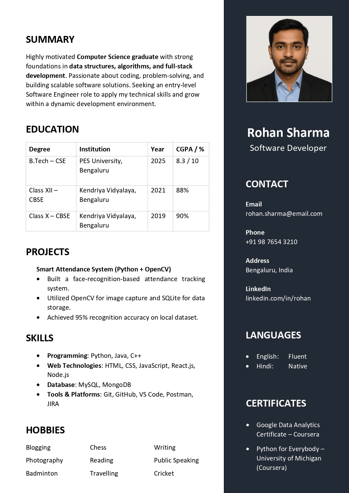

Transform your skills, education, and experience into a clean, professional resume ready for job applications.
Get Started
Ensure your resume is structured for Applicant Tracking Systems used by companies worldwide.
Highlight your projects, experience, and technical skills in a way that stands out to employers.
Export your resume as a professional PDF and start applying for jobs immediately.